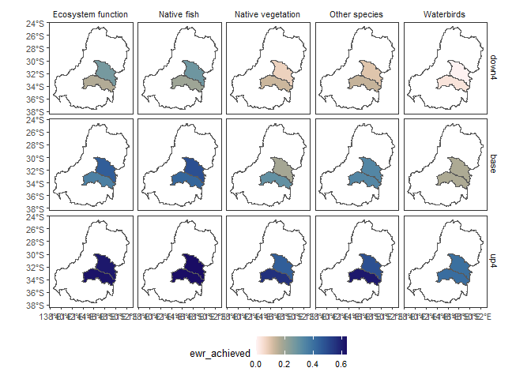
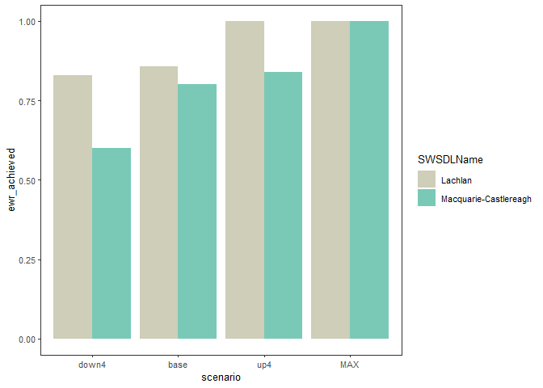

This R package forms the core of the WERP climate adaptation toolkit (HydroBOT), ingesting hydrological scenarios representing historical or future climates or adaptation options, and processing those through various response models (currently MDBA EWR tool, with intention to include other tools in future). Subsequent processing of outcomes along spatial, theme, and temporal axes are available, as well as control over outputs and comparisons between scenarios. Causal networks defining relationships in the response models are included, though in general the current versions should be obtained from the EWR tool directly with get_causal_ewr().
See the documentation website for more installation instructions and examples.
The template repo can be helpful for establishing project structure to use the HydroBOT and automating the setup process, particularly if you are on Linux or want to manage your python environments.
Installation
Install the development version of HydroBOT from GitHub with
# install.packages("devtools")
devtools::install_git("git@github.com:MDBAuth/HydroBOT.git", ref = 'master', force = TRUE, upgrade = 'ask', git = 'external')
library(HydroBOT)
#> Loading required package: sf
#> Linking to GEOS 3.12.1, GDAL 3.8.4, PROJ 9.3.1; sf_use_s2() is TRUER uses a different Home directory than standard (typically ~/Documents), and so if this fails, try to set up SSH keys in that location as well.
There are slightly slicker ways to do it, but they don’t work well currently. See developer docs for details or if the above doesn’t work.
Python dependency
To run, this needs a Python environment containing py_ewr (currently py-ewr 2.3.7). The package will manage that for you if you just start using it- on first use, the package checks the environment and either uses an existing python environment or builds one with that dependency when the package is loaded.
There are poetry.lock and pyproject.toml files in the repo that allow for dev work and building the venv manually if more control over python is desired.
Use
HydroBOT can be run piecemeal or all at once, scripted. Point it at a directory of hydrologic scenarios, and HydroBOT will run them through the modules, aggregate the outputs, and present results, with control by the user through function arguments. Each stage builds a runnable set of parameter metadata based on function arguments for tracking provenance and reproducibility. Typical approaches use R scripts, Quarto notebooks, or automation on HPC or azure systems with yaml parameter files and shell/R scripts.
See the HydroBOT documentation website for a full demonstration and the template repo for a bare-bones project structure.
Using HydroBOT is typically a three-step process:
-
Running hydrographs through the EWR tool (or future modules) with
prep_run_save_ewrs().- Best practice has hydrographs in directories defined by scenarios, so all hydrographs within a scenario can be run at once, parallelised over scenarios.
-
Aggregating module outputs to larger theme, spatial, and temporal scales with
read_and_agg()read_and_agg()maintains dimensional safety over theme, temporal, and spatial dimensions, avoiding the collapse over unintended dimensions that is quite easy to miss if manually using e.g.dplyr::summarise().read_and_agg()(and wrapped functions for dimensional aggregation) provide the ability to retain groupings and do non-spatial joins of spatial data. This allows them to be EWR-aware, and provide warnings and automation for best-practice automation of EWR aggregation that does not collapse planning and sdl units too soon and join gauges to them non-spatially. The easiest way to use this is withauto_ewr_PU = TRUE.It is expected that
read_and_agg()may be run several times for a given analysis, with several different aggregation sequences, as different sets may be needed for different questions, or iterative production of results identifies better approaches.
-
Developing output products targeting the question of interest (typically a scenario comparison) with
plot_outcomes()andbaseline_compare()plot_outcomes()provides consistent processing and analysis of input and output data, compared to manually building ggplotsplot_outcomes()is theme, space, and time-aware, and so prevents accidental overplotting or other losses of dimensional data.The return from
plot_outcomes()is a ggplot object, which can then be tweaked as usual.
Example run
A simple run of HydroBOT with the provided example data works as follows. See the documentation website for much more detail.
Any real run should think carefully about the aggregation and plotting decisions. For much more detail about setting up runs, see the documentation.
The path to the hydrographs
hydro_dir <- system.file("extdata/testsmall/hydrographs", package = "HydroBOT")Run the EWR tool and return the output to memory, rather than saving for this small example. See documentation for more details
ewr_out <- prep_run_save_ewrs(
hydro_dir = hydro_dir,
output_parent_dir = tempdir(),
outputType = list("none"),
returnType = list("yearly")
)Set up the aggregation steps, see documentation for more detail.
aggseq <- list(
all_time = "all_time",
ewr_code = c("ewr_code_timing", "ewr_code"),
env_obj = c("ewr_code", "env_obj"),
sdl_units = sdl_units,
Target = c("env_obj", "Target"),
mdb = basin,
target_5_year_2024 = c("Target", "target_5_year_2024")
)
funseq <- list(
all_time = "ArithmeticMean",
ewr_code = "CompensatingFactor",
env_obj = "ArithmeticMean",
sdl_units = "ArithmeticMean",
Target = "ArithmeticMean",
mdb = "SpatialWeightedMean",
target_5_year_2024 = "ArithmeticMean"
)Do the multi-dimensional aggregation, again just returning to memory.
aggout <- read_and_agg(
datpath = ewr_out,
type = "achievement",
geopath = bom_basin_gauges,
causalpath = causal_ewr,
groupers = "scenario",
aggCols = "ewr_achieved",
auto_ewr_PU = TRUE,
aggsequence = aggseq,
funsequence = funseq,
saveintermediate = TRUE,
namehistory = FALSE,
keepAllPolys = FALSE,
returnList = TRUE,
add_max = FALSE
)A couple figures to check it worked, see documentation for more detail.
map_example <- aggout$Target |>
# dplyr::filter(env_obj == "NF1") |> # Need to reduce dimensionality
plot_outcomes(
outcome_col = "ewr_achieved",
plot_type = "map",
colorset = "ewr_achieved",
pal_list = list("scico::lapaz"),
pal_direction = -1,
facet_col = "Target",
facet_row = "scenario",
sceneorder = c("down4", "base", "up4"),
underlay_list = "basin"
) +
ggplot2::theme(legend.position = "bottom")
map_example
catchcompare <- aggout$env_obj |>
plot_outcomes(
outcome_col = "ewr_achieved",
colorset = "SWSDLName",
pal_list = list("calecopal::lake"),
sceneorder = c("down4", "base", "up4"),
position = "dodge"
)
catchcompare
Further examples
See the HydroBOT website for a full demonstration.
Who do I talk to?
- Galen Holt, g.holt@deakin.edu.au